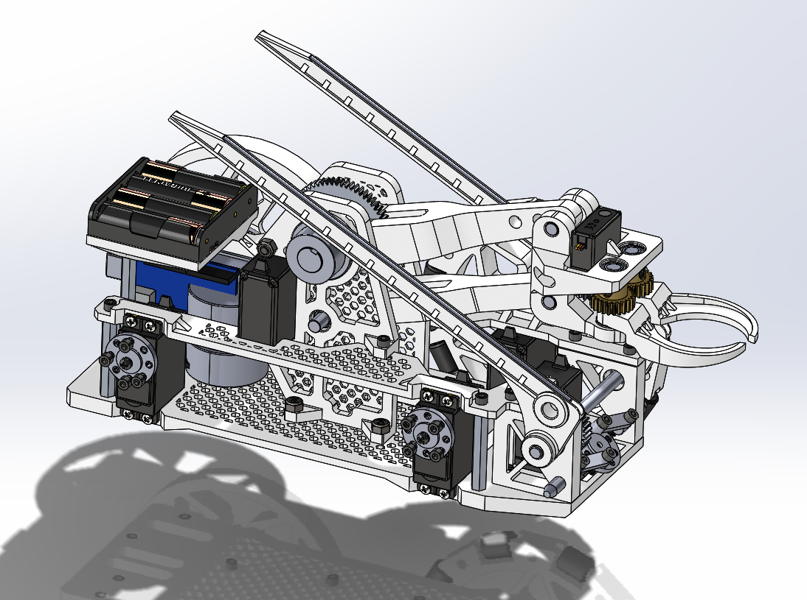

Design
A lot of teams designed their robots to have a passive arm pivot across a gear with the claw at the end, but our approach was different. Where people wanted to stay behind the moat, we were willing to drive off it. This idea came from
watching a video of how concrete bridges were assembled with massive machines. The base was built similarly to how FPV drones are assembled which you can see from the double-layered body.